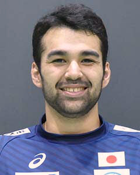

1
GK
ささき りょうすけ
佐々木 亮輔
豊田合成
日本体育大学出
1993-03-06 生
身長 192cm
国際試合出場数 7
同 通算得点 0
7
LW
みやざき だいすけ
宮﨑 大輔
大崎電気
日本体育大学出
1981-06-06 生
身長 175cm
国際試合出場数 129
同 通算得点 582
10
LW
すぎおか なおき
杉岡 尚樹
トヨタ車体
中央大学出
1994-04-18 生
身長 177cm
国際試合出場数 8
同 通算得点 6
11
RB
ひがしながはま ほずき
東長濱 秀希
大崎電気
日本体育大学出
1987-11-21 生
身長 186cm
国際試合出場数 37
同 通算得点 58
13
PV
かさはら けんや
笠原 謙哉
トヨタ車体
東海大学出
1988-05-15 生
身長 197cm
国際試合出場数 39
同 通算得点 23
15
LB
べいぐ あだむ ゆうき
部井久 アダム 勇樹
Cesson Rennes(FRA)
博多高校出
1999-04-21 生
身長 194cm
国際試合出場数 13
同 通算得点 29
16
GK
かい あきひと
甲斐 昭人
トヨタ車体
日本体育大学出
1987-04-29 生
身長 184cm
国際試合出場数 77
同 通算得点 8
18
LW
なりた こうへい
成田 幸平
湧永製薬
大阪体育大学出
1989-06-15 生
身長 191cm
国際試合出場数 61
同 通算得点 103
19
RB
とくだ しんのすけ
徳田 新之介
Dabas(HUN)
筑波大学出
1995-12-06 生
身長 178cm
国際試合出場数 28
同 通算得点 108
20
RB
わたなべ じん
渡部 仁
トヨタ車体
日本大学出
1990-01-17 生
身長 183cm
国際試合出場数 60
同 通算得点 203

21
LW
どい れみい あんり
土井 レミイ 杏利
Chartres(FRA)
日本体育大学出
1989-09-28 生
身長 181cm
国際試合出場数 25
同 通算得点 55
24
LB
しだ ひろき
信太 弘樹
大崎電気
日本体育大学出
1989-06-24 生
身長 188cm
国際試合出場数 70
同 通算得点 206
25
RW
もとき ひろき
元木 博紀
大崎電気
日本体育大学出
1992-02-14 生
身長 182cm
国際試合出場数 56
同 通算得点 146

26
GK
くぼ ゆうき
久保 侑生
大同特殊鋼
筑波大学出
1988-05-24 生
身長 186cm
国際試合出場数 32
同 通算得点 0

27
PV
たまかわ ひろやす
玉川 裕康
大崎電気
国士舘大学出
1995-04-27 生
身長 197cm
国際試合出場数 22
同 通算得点 21
29
PV
おかもと りゅうせい
岡元 竜生
トヨタ車体
中部大学出
1993-11-01 生
身長 192cm
国際試合出場数 0
同 通算得点 0
31
LB
よしの たつき
吉野 樹
トヨタ車体
明治大学出
1994-07-13 生
身長 182cm
国際試合出場数 12
同 通算得点 37
33
CB
あがりえ ゆうと
東江 雄斗
大同特殊鋼
早稲田大学出
1993-07-06 生
身長 183cm
国際試合出場数 36
同 通算得点 111
44
CB
かどやま てつや
門山 哲也
トヨタ車体
日本大学出
1983-10-22 生
身長 186cm
国際試合出場数 113
同 通算得点 343